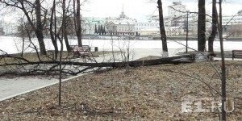

Самолёт, летящий из Сургута в Москву, экстренно приземлился в
Екатеринбурге из-за поломки
Борт принадлежит компании "Аэрофлот".
Сегодня в Екатеринбурге экстренно
приземлился
самолёт авиакомпании "Аэрофлот",
который
летел из Сургута в Москву. Вынужденная
посадка
произошла из-за технической
неисправности.
– Рейс авиакомпании "Аэрофлот" Сургут –
Москва совершил вынужденную посадку в
аэропорту
Кольцово в связи с технической
неисправностью
воздушного судна, – сообщили E1.RU в
пресс-службе Кольцово. – После прибытия
запасного
борта рейс был продолжен в пункт назначения.
Агентство Interfax.ru, ссылаясь на собственный
источник
в авиадиспетчерских
службах,
сообщило, что самолёт сел из-за детонации
печи на борту.
Пассажиров пересадили на другой борт.
"Когда самолёт находился в районе
Ханты-Мансийска, экипаж доложил об
аварийной
ситуации
на кухне", – приводит агентство слова
собеседника.
Из-за скачка напряжения
произошла
поломка печи, но пожара не последовало.
"Самолёт благополучно выполнил
посадку в Екатеринбурге. Никто не
пострадал, – сказал
он.
– Самолёт от дальнейших полётов временно
отстранён, пассажиры пересажены на
резервный
борт".
Субботний ураган: в МЧС объявили штормовое предупреждение
На Урале ждут очень сильный ветер, рвущий провода и ломающий деревья.
МЧС и синоптики объявили штормовое
предупреждение
на Среднем Урале. 21 октября
местами в
Свердловской области прогнозируется
ветер с порывами до 25 метров в секунду.
Возможно
падение слабоукреплённых конструкций,
деревьев,
повреждение остекления зданий и
строений, обрыв линий связи и
электропередачи.
В результате шквалистых порывов
ветра
возможно перехлёстывание линий
электропередачи,
способствующее возникновению
пожаров.

В субботу нас ждёт сильный ветер.
Напомним, температура воздуха днём
ожидается
от 0 до 2 градусов тепла, по ночам –
до
5
градусов мороза.
Главное управление МЧС России по Свердловской
области
просит жителей не терять
бдительность и не пренебрегать
рекомендациями
МЧС при непогоде.
ИИ-платформа AlphaGo Zero отточила го без участия человека
DeepMind, подразделение холдинга Alphabet,
продолжает
работу над
совершенствованием
искусственного интеллекта. Именно
специалисты
DeepMind создали чемпиона мира по
игре
в
го — платформу AlphaGo. Ей удалось выиграть у
нескольких
чемпионов мира по го,
после
чего стало ясно, что человек уже никогда не
сможет победить машину.
Недавно DeepMind сообщила о появлении ещё более
сильной системы компьютерного го,
способной играть в го лучше, чем все предыдущие
версии AlphaGo. Новинка получила
название AlphaGo Zero. Эта платформа научилась
играть
в го без обучения на
партиях,
сыгранных человеком, сама по себе.
В «базе знаний» AlphaGo Zero — правила го и больше
ничего. Тем не менее, программа очень
быстро совершенствуется, играя сама с собой.
Разработчики утверждают, что Zero освоила
правила игры всего за несколько часов.
Спустя
три дня самообучения AlphaGo Zero победила
AlphaGo Lee, версию ИИ, которая
победила
Ли
Седоля со счетом 4:1 в 2016 году.
Писать веб-сайты на ассемблере полезно и приятно
Конечно, многие скажут, что это ни-ни и писать для веба
нужно только на PHP,
ну или на один из модерных языках Питон, Руби, Node.js
и т.д.
Но дело в том, что написание сайтов на
ассемблере очень полезно, а с
подходящими инструментами — легко и
приятно.
Двигаться быстрее скорости света? — Нет ничего проще
Теория относительности
завораживает своими
парадоксами. Все мы знаем про
близнецов,
про
возможности засунуть длинный самолёт в
короткий ящик. Сегодня каждый выпускник
школы
знает ответы на эти классические загадки,
а уж студенты-физики и подавно
считают,
что
тайн в специальной теории относительности
для них не осталось.
Всё бы хорошо, если бы не удручающе
обстоятельство — невозможность
сверхсветовых
скоростей. Неужели никак нельзя быстрее?! —
думала я в детстве. А может быть
можно?!
Поэтому приглашаю вас на сеанс, уж и не знаю, чёрной
или белой магии имени
Альберта
Эйнштейна с разоблачением в конце. Впрочем
для тех, кому покажется мало, я
приготовила
ещё и задачку.
Камня едва хватило на Ленина: в мэрии пожаловались, что весь гранит Урала уходит
в Москву
Заказы на уральских предприятиях расписаны на несколько лет вперёд.
В конце лета многострадальный пешеходник
у "Пассажа" был наполовину гранитным,
наполовину асфальтовым.
Вице-мэр Екатеринбурга по транспорту и
благоустройству Евгений Архипов заявил,
что
обеспечить потребности Екатеринбурга
гранитом оказалось огромной проблемой,
потому
что
все производственные мощности страны сейчас
загружены заказами из Москвы, где
идёт
интенсивное благоустройство общественных
пространств.
– С гранитом огромная проблема:
ни один регион не может себе
позволить
заказать и
купить
этот гранит, потому что московские заказы на
предприятиях уже расписаны на
несколько
лет
вперёд, – отметил он.
Евгений Архипов уточнил, что очень мало
поставщиков способны справиться ещё и с
другими
заказами, кроме московских. При этом в
Екатеринбурге,
по его словам, проблема с
гранитом
всё-таки уже разрешилась, и один-два поставщика,
которые поставляют этот
материал,
найдены.
Стоит отметить, что тема дефицита гранита
из-за московских заказов вчера в
очередной
раз
была поднята на федеральном уровне порталом
"Медуза". В Екатеринбурге её яркой
иллюстрацией был момент, когда половину
нового пешеходного перехода на
Ленина просто
заасфальтировали на время, потому
что гранита на него в момент работ не хватило
–
пришлось ждать поставок. Гранит на Ленина – это
гранит из Карелии, потому что
единственный гранитный завод в
Екатеринбурге
подписал контракты с Москвой на
несколько
лет вперёд.
Обнаружены критичные уязвимости в протоколе WPA2 — Key Reinstallation Attacks
(KRACK)
Группа исследователей обнаружила
серьезные недостатки в протоколе WPA2,
обеспечивающем
защиту всех современных Wi-Fi сетей.
Злоумышленник,
находящийся в зоне действия
жертвы,
может использовать эти недостатки, используя
Key Reinstallation Attacks.
Злоумышленники
могут использовать этот новый метод атаки для
чтения информации, которая ранее
считалась
зашифрованной.
Уязвимости WPA2 позволяют
обойти защиту и прослушивать
Wi-Fi-трафик,
передаваемый
между
точкой доступа и компьютером.
Атака работает против частых и
корпоративных
Wi-Fi сетей, против устаревшего WPA
и
свежего стандарта WPA2, и даже против сетей,
которые используют исключительно
AES.
Все
наши атаки, направленные на WPA2, используют
новаторскую технику реинсталляции
ключей
(key reinstallation), — пишут авторы KRACK.
По сути, KRACK позволяет злоумышленнику
осуществить атаку типа man-in-the-middle
и
принудить участников сети выполнить
реинсталляцию
ключей шифрования, которые
защищают
трафик WPA2. К тому же если сеть настроена на
использование
WPA-TKIP или GCMP,
злоумышленник сможет не только прослушивать
трафик WPA2, но и осуществлять
инжекты
пакетов в данные жертвы.
Метод KRACK универсален и работает против
любых устройств, подключенных к Wi-Fi
сети. То
есть в опасности абсолютно все пользователи
Android, Linux, iOS, macOS, Windows,
OpenBSD, а также многочисленные IoT-устойства.
По словам исследователей, эксплоит не будет
опубликован до момента, пока
большинство
вендоров не выпустит обновления.